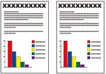

This section describes the procedure to copy a document of A4 size on plain paper.
For the operation, see the notes and operation procedure described in the reference page.

You need to prepare:
Originals to copy. See Originals You Can Load.
Paper for printing. See Media Types You Can Use.
Prepare for copying.
(1) Make sure that the power is turned on.
See Operation Panel.
(2) Press the COPY button.
The copy standby screen will appear.
(3) Load paper.
See Loading Paper.
Here we make sure that A4 plain paper is loaded in the Cassette.
 Note Note
|
(4) Open the Paper Output Tray gently.
(5) Load an original on the Platen Glass or in the ADF.
See Loading Originals.
To load the original on the Platen Glass, align it with the alignment mark  WITH THE SIDE TO COPY FACING DOWN as shown below.
WITH THE SIDE TO COPY FACING DOWN as shown below.
Then close the Document Cover gently.
| Note
|
Start copying.
(1) Use the [+] or [-] button (A) to specify the number of copies.
(2) Press the right Function button (B) to select Print settings, and specify the magnification, copy intensity, the page size, media type, etc.
Here we confirm that Same size is selected for Magnif., 0 for Intensity, A4 for Page size, and Plain paper for Type.
To change the settings, use the  or
or  button (C) to select the item to change, and use the
button (C) to select the item to change, and use the  or button (D) to select an option. After confirming or changing the settings, press the OK button to return to the copy standby screen.
or button (D) to select an option. After confirming or changing the settings, press the OK button to return to the copy standby screen.
See Basic Operation on the Settings Screen and Changing the Settings.
| Note
Refer to the on-screen manual: Advanced Guide.
|
(3) Press the Color button for color copying, or the Black button for black & white copying.
The machine starts copying.
Remove the original on the Platen Glass or the Document Output Slot after copying is completed.
 Important Important
If you open the Document Cover while printing is in progress, be sure to close it gently. |
| Note
For details, refer to the on-screen manual: Advanced Guide.
|
 Changing the Settings
Changing the SettingsPress the right Function button to select Print settings on the copy standby screen. You can select the item, such as page size, media type, or print quality, and change the setting.
For the setting operation, see Basic Operation on the Settings Screen.
For details, refer to the on-screen manual: Advanced Guide.
(1) Magnif. (Magnification)
Specify the enlargement/reduction manner. You can specify the copy scale by selecting the page size: A4 to A5, A4 to B5, etc. If you do not want to enlarge/reduce the page size, select Same size.
To specify the scale in units of 1%, press the right Function button to select Advanced. This is not available when Fit to page is set.
(2) Intensity
Specify the intensity when you want to make the darkened/lightened copy. Select Auto to automatically adjust the intensity according to the original. When Auto is selected, the ADF is not available.
(3) Page size
Select the page size of the paper to print: A4, Letter, etc.
(4) Type (Media type)
Select the media type of the paper to print: Plain paper, Plus Glossy II, etc.
| Note
|
(5) Print qlty (Print quality)
Select the print quality according to the original to copy: Standard, High, etc. The available print quality settings depend on the paper selected for Type.
(6) 2-sided
Copy a single side of two originals to both sides of a single paper, both sides of original to single side of paper, or both sides of original to both sides of paper.
When 1 2sided print, 2
2sided print, 2 1sided print, or 2
1sided print, or 2 2sided print is selected, press the right Function button to select Advanced and select the staple side of both sided originals or print paper.
2sided print is selected, press the right Function button to select Advanced and select the staple side of both sided originals or print paper.
See Using Various Copy Functions.
(7) Layout
Select the layout: 2-on-1 copy or 4-on-1 copy.
See Using Various Copy Functions.
(8) Orientation
Select the orientation of the original to copy: Portrait or Landscp..
| Note
|


 2sided print
2sided print 1sided print
1sided print 2sided print
2sided print